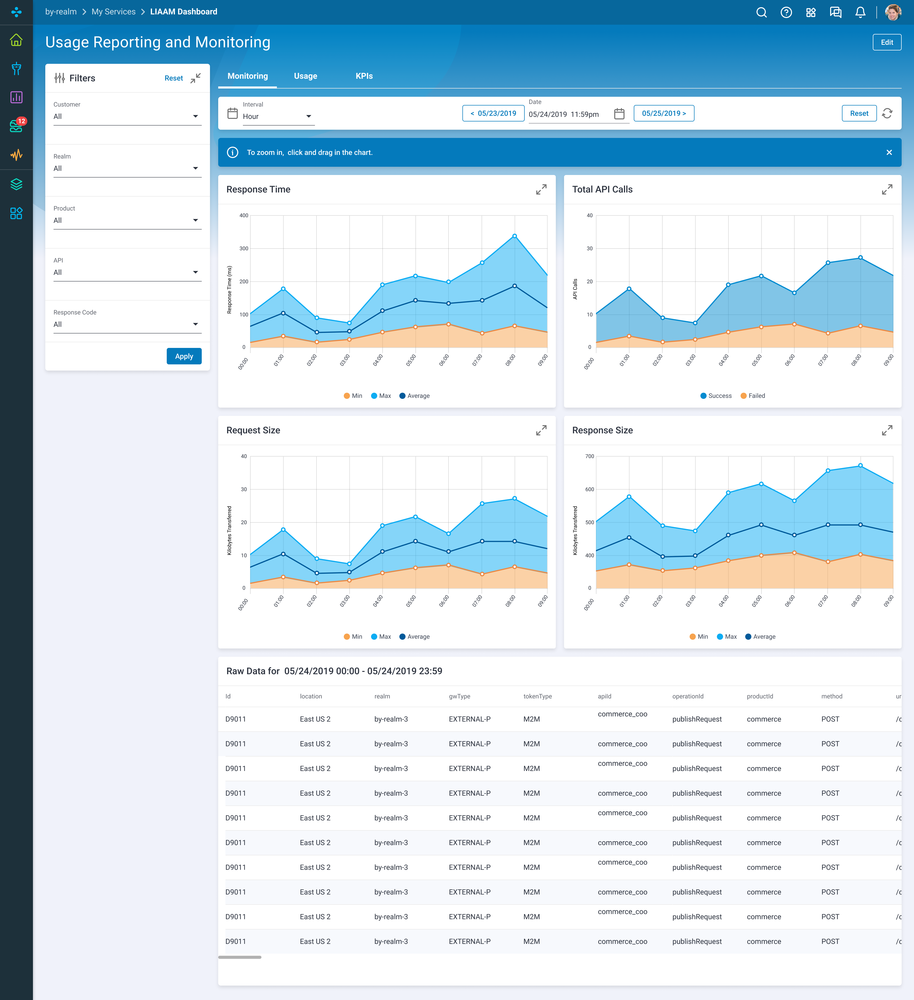

Blue Yonder
Blue Yonder delivers a machine learning-driven digital fulfillment platform to enable clients to deliver
to their customers when, how and where they want it..
API Usage And Reporting Dashboard
One the thirteen scrum teams I supported throughout my time at Blue Yonder was the API Management team. One of the products I built for the team was a dashboard to monitor the health and status of their APIs. Until then, the operations team did not have a single place to monitor the health of their various APIs. Frequently, the team would only find out something was failing when a customer would call and point it out.
The goal of the API Dashboard was to give the API operations team a way to monitor the health of their APIs and surface problems before our customers noticed.
Dashboard
Widgets


So, How can I help you?